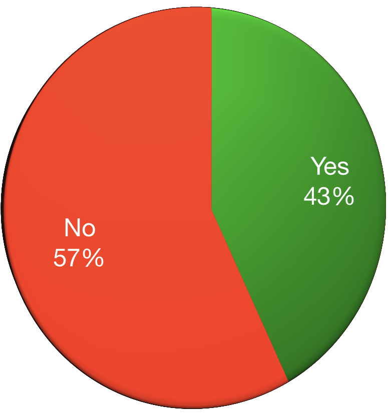

<!DOCTYPE html>
<html lang="en">
  <head>
    <meta charset="utf-8" />
    <meta name="viewport" content="width=device-width, initial-scale=1.0, maximum-scale=1.0, user-scalable=no" />

    <title>Dealing with mental illness</title>
    <link rel="stylesheet" href="./css/reveal.css" />
    <link rel="stylesheet" href="./_assets/osmi" id="theme" />
    <link rel="stylesheet" href="./css/highlight/zenburn.css" />
    <link rel="stylesheet" href="./css/print/paper.css" type="text/css" media="print" />
    <link rel="stylesheet" href="./_assets/theme/osmi.css" />

  </head>
  <body>
    <div class="reveal">
      <div class="slides"><section  data-markdown><script type="text/template">

<!-- .slide: class="small-p" -->
## Dealing with mental illness
### Or: How I learned to dislike myself less

J.D. Flynn, Drupal Technical Architect

@JDDoesDev • Slack(s): Dorf

Chicago PHP Meetup • #OSMI

<aside class="notes"><ul>
<li>Welcome everyone!</li>
<li>Thank you for having me</li>
</ul>
</aside></script></section><section  data-markdown><script type="text/template">

# Hello!

<aside class="notes"><p>I always like to start off with a big friendly greeting, so Hello!</p>
</aside></script></section><section  data-markdown><script type="text/template">

## Disclaimers:
* ### NOT a doctor<!-- .element: class="fragment" -->
* ### NOT a lawyer<!-- .element: class="fragment" -->
* ### Possible naughty language<!-- .element: class="fragment" -->
* ### It's about to get personal<!-- .element: class="fragment" -->

<aside class="notes"><p>I also like to start off by covering my ass
Disclaimer:</p>
<ul>
<li>I&#39;m not a mental health professional</li>
<li>I&#39;m not a legal professional</li>
<li>I also tend to swear without thinking about it... sorry</li>
<li>Also, I&#39;m going to go into quite a bit of detail</li>
</ul>
</aside></script></section><section  data-markdown><script type="text/template">

# Why are we here?
## Today, that is<!-- .element: class="fragment" -->

<aside class="notes"><ul>
<li>Hopefully we aren&#39;t going to spark a philosophical debate that results in an existential crisis for someone.</li>
<li>I&#39;m here to talk WITH you about something very important to me, and hopefully to you</li>
<li>I hope you&#39;re here because you want to take part in a conversation, or at least learn something</li>
<li>Also here to tell story<ul>
<li>Hope it helps someone the way another person&#39;s story helped me</li>
</ul>
</li>
</ul>
</aside></script></section><section  data-markdown><script type="text/template">
<!-- .slide: data-background-color="#888f79" -->

# So let's have a conversation!
## You first <!-- .element: class="fragment" -->

<aside class="notes"><h3 id="do-the-fragment-">DO THE FRAGMENT!</h3>
<ul>
<li>You&#39;re going to learn a lot about me</li>
<li>I like to have an idea of who I&#39;m talking with</li>
<li>How many of you are developers, designers, or anything directly related to making sites or programming?</li>
<li>How many of you are project managers, owners, or account managers or similar</li>
<li>How many of you are in HR?</li>
<li>How many of you are in upper management? Managers, Presidents, CEOs, etc.</li>
</ul>
</aside></script></section><section  data-markdown><script type="text/template">

## who the heck is this guy?
### OH YEAH, I HAVE MENTAL ILLNESSES<!-- .element: class="fragment" -->

<aside class="notes"><ul>
<li>Drupal/PHP Developer for 6 years</li>
<li>Doing HTML since the 90s</li>
<li>BASIC around the same time</li>
<li>MidCamp Organizer</li>
<li>Drupal Chicago Meetup Organizer</li>
<li>Paramedic/EMT/firefighter for 10 years</li>
</ul>
</aside></script></section><section  data-markdown><script type="text/template">

## Why do I care?
<div class="replace">
 <p>_**I'm not weak; I'm sick**_ <!-- .element: class="fragment fade-in-then-out" --></p>
 <p>_**I'm not damaged; I have a disease**_ <!-- .element: class="fragment fade-in-then-out" --></p>
 <p>_**It's not a choice; It's a condition**_ <!-- .element: class="fragment fade-in-then-out" --></p>
</div>
<aside class="notes"><ul>
<li>I suffered in silence<ul>
<li>For a very long time I was in denial.  I was afraid that admitting I had an illness would make it real</li>
</ul>
</li>
<li>Perfect health until doctor tells you otherwise</li>
<li>I worried that if I told people they&#39;ll treat me differently</li>
</ul>
<p>fragment - Something that I often need to tell myself, and still have a hard time convincing myself of</p>
</aside></script></section><section  data-markdown><script type="text/template">

# WHAT IS MENTAL ILLNESS?

<aside class="notes"><ul>
<li>Going to talk a lot about mental illness, otherwise this would be a very short presentation</li>
<li>Mental illness refers to a wide range of mental health conditions — disorders that affect your mood, thinking and behavior.</li>
<li>DSM 5 -- latest version</li>
</ul>
</aside></script></section><section  data-markdown><script type="text/template">
<!-- .slide: data-background-color="#008e7f" -->

## Just what mental illnesses are you dealing with, you ask?
- Major Depression <!-- .element: class="fragment" -->
- Anxiety Disorder <!-- .element: class="fragment" -->
- PTSD <!-- .element: class="fragment" -->
- ADHD <!-- .element: class="fragment" -->
- TBD? <!-- .element: class="fragment" -->

<aside class="notes"><ul>
<li>Well, person I imagined just for this slide... I have:</li>
<li>I&#39;m one diagnosis away from Mental Illness Bingo</li>
<li>I say TBD because there is such a high level of comorbidity, or co-existing conditions that I&#39;m bound to collect another square soon</li>
<li>Let&#39;s define these for clarity</li>
</ul>
</aside></script></section><section  data-markdown><script type="text/template">
<!-- .slide: data-background-color="#008e7f" -->

# Major Depression

<aside class="notes"><ul>
<li>Clinical Depression: feelings of low self-worth or guilt and a reduced ability to enjoy life.<ul>
<li>symptoms that are present <em>every day</em> for at <em>least 2 weeks</em> - WebMD</li>
</ul>
</li>
</ul>
</aside></script></section><section  data-markdown><script type="text/template">
<!-- .slide: data-background-color="#008e7f" -->

# Anxiety Disorder


<aside class="notes"><ul>
<li>Anxiety: characterized by feelings of worry or fear that are strong enough to interfere with daily activities - Mayo Clinic<ul>
<li>Amygdala - lizard brain - fight || flight, feed || breed</li>
</ul>
</li>
</ul>
</aside></script></section><section  data-markdown><script type="text/template">
<!-- .slide: data-background-color="#008e7f" -->

# Post Traumatic Stress Disorder

<aside class="notes"><ul>
<li>PTSD: failure to recover after experiencing or witnessing a terrifying event - Mayo Clinic<ul>
<li>Give the &quot;RAM v HDD&quot; metaphor</li>
</ul>
</li>
</ul>
</aside></script></section><section  data-markdown><script type="text/template">
<!-- .slide: data-background-color="#008e7f" -->

# Attention Deficit Hyperactivity Disorder

<aside class="notes"><ul>
<li>ADHD: varying degrees of hyperactivity, impulsivity, and/or inattention that lead to difficulty in academic, emotional, and social functioning.<ul>
<li>When I was a kid, this was often looked at as being a bit odd or just needing to burn off some energy</li>
</ul>
</li>
</ul>
</aside></script></section><section  data-markdown><script type="text/template">
<!-- .slide: data-background-color="#008e7f" -->

## I've only been getting treatment for a short time
(Relatively Speaking)

<aside class="notes"><ul>
<li>Why do I mention this?  Well, remember when I said it&#39;s about to get personal?</li>
</ul>
</aside></script></section><section  data-markdown><script type="text/template">
<!-- .slide: data-background-color="#675b53" -->

## My normal was not normal

<aside class="notes"><ul>
<li>For as long as I can remember, I felt this way</li>
<li>Nature v Nurture debate<ul>
<li>My childhood was rough</li>
<li>Witnessed physical and verbal abuse</li>
<li>I was emotionally abused<ul>
<li>This can take many forms, and I went through most of them</li>
</ul>
</li>
<li>I was left alone a lot</li>
<li>I had a hard time making connections</li>
<li>Few friends</li>
<li>Overweight, ugly, bad hygiene</li>
<li>Bullied... a lot</li>
<li>Didn&#39;t know how to handle emotions so I cried a lot or lashed out a lot.</li>
</ul>
</li>
<li>I thought it was all my fault.  I was defective.  I was unlikable.  I scared people away.</li>
<li>I never had a sense of safety at home so I became afraid of everything</li>
<li>I had one enemy in particular.  Ready to meet them?</li>
</ul>
</aside></script></section><section  data-markdown><script type="text/template">
<!-- .slide: data-background-color="#008e7f" -->

### Introducing: My nemesis
<div class="mirror-wrap">
  
  <p class="fragment mirror-text fade-in-then-out">You're worthless</p>
  <p class="fragment mirror-text fade-in-then-out">You're ugly</p>
  <p class="fragment mirror-text fade-in-then-out">Nobody likes you</p>
  <p class="fragment mirror-text fade-in-then-out">I hate you</p>
</div>

</script></section><section  data-markdown><script type="text/template">
<!-- .slide: data-background-color="#675b53" data-autoslide="1500"-->

## Every. Single. Day.

<div class="mirror-wrap faded">
  
  <p class="fragment mirror-text fade-in-then-out">You're worthless</p>
  <p class="fragment mirror-text fade-in-then-out">You're ugly</p>
  <p class="fragment mirror-text fade-in-then-out">Nobody likes you</p>
  <p class="fragment mirror-text fade-in-then-out">I hate you</p>
  <p class="fragment mirror-text fade-in-then-out">You're WORTHLESS</p>
  <p class="fragment mirror-text fade-in-then-out">You're UGLY</p>
  <p class="fragment mirror-text fade-in-then-out">NOBODY likes you</p>
  <p class="fragment mirror-text fade-in-then-out">I HATE you</p>
  <p class="fragment mirror-text fade-in-then-out">YOU'RE WORTHLESS</p>
  <p class="fragment mirror-text fade-in-then-out">YOU'RE UGLY</p>
  <p class="fragment mirror-text fade-in-then-out">NOBODY LIKES YOU</p>
  <p class="fragment mirror-text larger bold">I HATE YOU</p>
  <p class="fragment mirror-text" data-autoslide="0"></p>
</div>

<aside class="notes"><ul>
<li>I hated what I saw</li>
<li>I couldn&#39;t understand how anyone could like me</li>
<li>But it wasn&#39;t the mirror saying it, it was my reflection so it was me</li>
</ul>
</aside></script></section><section  data-markdown><script type="text/template">
<!-- .slide: data-background-color="#675b53" -->

## This was the norm for most of my life

<aside class="notes"><ul>
<li>Sometimes I would try to fake confidence<ul>
<li>It didn&#39;t work</li>
</ul>
</li>
<li>Sometimes I would act like things didn&#39;t bother me<ul>
<li>They did</li>
</ul>
</li>
<li>Sometimes I would get angry<ul>
<li>Okay, I was angry all the time</li>
</ul>
</li>
<li>Paranoid about everything</li>
<li>Afraid of everything</li>
<li>Deep, deep valleys</li>
<li>Felt useless</li>
<li>Unable to function</li>
<li>I mess up everything I touch</li>
<li>Unable to focus</li>
<li>constantly in fear of losing my job because of reduced output due to depression</li>
<li>spent a lot of time trying to figure out what was wrong with me</li>
</ul>
</aside></script></section><section  data-markdown><script type="text/template">

## I wasn't allowed to have mental illness

<aside class="notes"><ul>
<li>I was a paramedic and a firefighter<ul>
<li>We don&#39;t get sick, we help the sick</li>
<li>We&#39;re above having mental illness</li>
<li>I can name way too many people I worked with who died of suicide</li>
</ul>
</li>
</ul>
</aside></script></section><section  data-markdown><script type="text/template">

## Then something happened

<aside class="notes"><p>Well, let me correct that...</p>
</aside></script></section><section  data-markdown><script type="text/template">

## Then some things happened

<aside class="notes"><ul>
<li>I wish I could say it was a single moment, but it wasn&#39;t</li>
<li>It was a series of events<ul>
<li>College car story</li>
<li>Full blown panic attack, not the first, but one that I finally questioned</li>
</ul>
</li>
</ul>
</aside></script></section><section  data-markdown><script type="text/template">

## Career Change

<aside class="notes"><ul>
<li>I got into development and I started hanging out in online developer communities</li>
<li>Developer community is more inclusive and understanding than my previous life</li>
</ul>
</aside></script></section><section  data-markdown><script type="text/template">

## Health Scare

<aside class="notes"><ul>
<li>I found a lump where there shouldn&#39;t be a lump and I got scared</li>
<li>Started re-evaluating a lot of things</li>
</ul>
</aside></script></section><section  data-markdown><script type="text/template">

## I accepted I needed help

<aside class="notes"><ul>
<li>The first thing was the hardest. I saw other people living happy lives and not going through the same things I was.</li>
<li>People didn&#39;t get as angry as I did as easily as I did.</li>
<li>People weren&#39;t affected by everyday things like I was and I had an epiphany that maybe everything else wasn&#39;t the issue. Maybe it was me?<ul>
<li>if everywhere you go smells like dog crap, maybe you should look at your own shoes</li>
</ul>
</li>
<li>For a lot of people (including myself) this is the hardest part</li>
<li>All the signs were there, but I couldn&#39;t see them</li>
</ul>
</aside></script></section><section  data-markdown><script type="text/template">
<!-- .slide: data-background-color="#675b53" -->

## Fear...

<aside class="notes"><ul>
<li>Constantly afraid</li>
<li>crippling fear of everyday things</li>
<li>Social situations were paralyzing</li>
<li>canceled plans a lot</li>
<li>Paranoid about everything</li>
</ul>
</aside></script></section><section  data-markdown><script type="text/template">
<!-- .slide: data-background-color="#675b53" -->

## Led to Anger...

<aside class="notes"><ul>
<li>I was not a happy person and anything could set me off</li>
<li>Think of that lizard brain<ul>
<li>Fight or flight, feed or breed</li>
<li>If I can&#39;t eat it or make babies with it, I&#39;m going to run away or fight</li>
</ul>
</li>
</ul>
</aside></script></section><section  data-markdown><script type="text/template">
<!-- .slide: data-background-color="#675b53" -->

## Led to Hate...

<aside class="notes"><ul>
<li>This was usually a misunderstanding.<ul>
<li>Okay, I did get angry and hateful sometimes</li>
<li>I once threw a couch in rage... not proudest moment, looking back</li>
</ul>
</li>
</ul>
</aside></script></section><section  data-markdown><script type="text/template">
<!-- .slide: data-background-color="#675b53" -->

## Led to suffering

<aside class="notes"><ul>
<li>I finally realized that I had been suffering and that there was something I could do about it</li>
</ul>
</aside></script></section><section  data-markdown><script type="text/template">
<!-- .slide: data-background="./img/yoda.jpg" data-background-size="contain" style="margin-top: -10rem;" -->
## Sound familiar?

<aside class="notes"><p>A wise muppet once said...</p>
</aside></script></section><section  data-markdown><script type="text/template">
<!-- .slide: data-background-color="#675b53" -->

# Finally, I GOT TREATMENT!

<aside class="notes"><ul>
<li>I take medication<ul>
<li>Better living through chemistry</li>
</ul>
</li>
<li>I see a therapist</li>
<li>I find outlets<ul>
<li>active in the community through teaching and in the drupal community</li>
</ul>
</li>
<li>I start the conversation</li>
</ul>
</aside></script></section><section  data-markdown><script type="text/template">
<!-- .slide: data-background-color="#675b53" -->

# But It wasn't easy

<aside class="notes"><ul>
<li>There was a frustrating period between collecting my first diagnoses and getting medicated</li>
<li>During this time I attended a talk by Ed Finkler for OSMI</li>
<li>This helped me realize something very important</li>
<li>Mental illness had that stigma around it and that terrified me</li>
</ul>
</aside></script></section><section  data-markdown><script type="text/template">

# WE'RE NOT ALONE

<aside class="notes"><ul>
<li>Since getting diagnosed and erasing stigma from myself I&#39;ve realized I&#39;m not alone<ul>
<li>Which means we&#39;re not alone</li>
</ul>
</li>
<li>Nobody is the only one going through this<ul>
<li>May have different variables, but the interface is the same</li>
</ul>
</li>
<li>I realized that I was afraid because of the way people viewed me</li>
<li>I don&#39;t feel that way anymore because of organizations like OSMI</li>
</ul>
</aside></script></section><section  data-markdown><script type="text/template">

# How has treatment affected me?

<aside class="notes"><ul>
<li>I&#39;m not ashamed of who I am<ul>
<li>Before, I wanted to hide in shame because of who I am and my conditions.  I&#39;ve since realized that it&#39;s just part of me.  not too proud to admit i need help anymore</li>
</ul>
</li>
<li>The valleys aren&#39;t as deep<ul>
<li>Not to say they aren&#39;t around anymore or that I don&#39;t have deep valleys, but they are much less frequent than before and more manageable.</li>
</ul>
</li>
<li>My anxiety has gone down, but still rears its ugly head occasionally</li>
<li>Since getting on medication and seeing a therapist,<ul>
<li>I&#39;ve become more comfortable in social situations,</li>
<li>still introverted, so after this i&#39;m going to need to hide for a little while</li>
<li>I don&#39;t have nearly as many anxiety attacks or times when I am unreasonably afraid of doing normal things</li>
</ul>
</li>
</ul>
</aside></script></section><section  data-markdown><script type="text/template">
<!-- .slide: data-background="./img/osmi_logo.png" data-background-size="contain" -->

# Now I work with OSMI

<aside class="notes"><ul>
<li>Open Sourcing Mental Illness</li>
<li>Focused on erasing the stigma around mental illness, specifically in the tech community</li>
<li>Founded by Ed Finkler</li>
<li>Run by some amazing people</li>
</ul>
</aside></script></section><section  data-markdown><script type="text/template">

### Also, I can tolerate this thing a little more
<div class="mirror-wrap">
  
  <p class="fragment mirror-text fade-in-then-out">You're tolerable</p>
  <p class="fragment mirror-text fade-in-then-out">I've seen worse</p>
  <p class="fragment mirror-text fade-in-then-out">Someone might want you around</p>
  <p class="fragment mirror-text--smaller fade-in-then-out">Even though we don't agree on everything, you have some valid opinions and shouldn't be afraid to share them occasionally</p>
</div>

</script></section><section  data-markdown><script type="text/template">

# We're not alone!

<aside class="notes"><ul>
<li>I mean this in general, but more specifically in the tech community</li>
</ul>
</aside></script></section><section  data-markdown><script type="text/template">

# WHY TECH SPECIFICALLY?

<aside class="notes"><ul>
<li>Suspected for a long time</li>
<li>Creatives appeared to be more prone to depression and anxiety</li>
<li>Sites like now OSMI forums and word of mouth were all there were to go on</li>
<li>Intelligent and creative people tend to think over situations more than others.</li>
<li>Many people can &quot;let go&quot; of events or not look for cause/event connection</li>
<li>Creative thinkers tend to re-play events over and over again to better understand them.</li>
<li>Replaying can lead to feeling depressed or hopeless</li>
</ul>
</aside></script></section><section  data-markdown><script type="text/template">

# IMPOSTER SYNDROME

<aside class="notes"><ul>
<li>The feeling that you don&#39;t deserve to be doing what you&#39;re doing</li>
<li>Give example of how you deal with it/are dealing with it.<ul>
<li>Asking for help isn&#39;t weakness</li>
<li>Showing that you have limits</li>
</ul>
</li>
<li>Mention that it&#39;s common with people on FED discord</li>
<li>inability to take compliments</li>
</ul>
</aside></script></section><section  data-markdown><script type="text/template">

## More unexpected audience participation!
<aside class="notes"><ul>
<li>I&#39;ve been going on for a while now</li>
<li>Let&#39;s change it up a bit and ask some more questions</li>
</ul>
</aside></script></section><section  data-markdown><script type="text/template">
<!-- .slide: data-background-color="#675b53" -->

## Would you tell someone with glasses or contacts to try looking harder?

</script></section><section  data-markdown><script type="text/template">
<!-- .slide: data-background-color="#675b53" -->

## Would you ask someone in a wheelchair why they decided not to walk?

</script></section><section  data-markdown><script type="text/template">
<!-- .slide: data-background-color="#675b53" -->

## Would you tell someone with diabetes or a heart condition to stop taking their medicine and to snap out of it?

<aside class="notes"><p>Pretty silly, right?  Let&#39;s switch it up.</p>
</aside></script></section><section  data-markdown><script type="text/template">
<!-- .slide: data-background-color="#675b53" -->

### Would you tell someone with ~~glasses or contacts~~ depression to try ~~looking harder~~ being happy?

</script></section><section  data-markdown><script type="text/template">
<!-- .slide: data-background-color="#675b53" -->

### Would you ask someone in a ~~wheelchair~~ panic attack if they've considered trying harder to ~~walk~~ not have anxiety?

</script></section><section  data-markdown><script type="text/template">
<!-- .slide: data-background-color="#675b53" -->

### Would you tell someone with ~~diabetes or a heart condition~~ ADHD to stop taking their medicine and to just try ~~being healthy~~ focusing?

</script></section><section  data-markdown><script type="text/template">
<!-- .slide: data-background-color="#675b53" -->

### Images like this


</script></section><section  data-markdown><script type="text/template">
<!-- .slide: data-background-color="#675b53" -->

### This...


</script></section><section  data-markdown><script type="text/template">
<!-- .slide: data-background-color="#675b53" -->

### And this...


</script></section><section  data-markdown><script type="text/template">
<!-- .slide: data-background-color="#675b53" -->

## They all pretty much say the same thing

<aside class="notes"><p>They all say the same thing</p>
<ul>
<li>It&#39;s a decision to feel this way</li>
<li>You don&#39;t need help</li>
<li>It something you can will yourself out of</li>
<li>Personally, I can vouch for the effects of medication<ul>
<li>Everyone is different and what works for me may not work for the next person</li>
<li>Sure, there are a few side effects, but the benefits greatly outweigh the side effects</li>
</ul>
</li>
</ul>
</aside></script></section><section  data-markdown><script type="text/template">

### But remember...


</script></section><section  data-markdown><script type="text/template">

## So how do we Erase the Stigma?

</script></section><section  data-markdown><script type="text/template">

## We need to be...

</script></section><section  data-markdown><script type="text/template">

# __STRONGER THAN FEAR__
<!-- .slide: data-background="./img/osmi_logo.png" data-background-size="contain" -->

<aside class="notes"><ul>
<li>What does that mean?<ul>
<li>Not &quot;beat your fear at arm wrestling&quot;</li>
</ul>
</li>
<li>Start the conversation</li>
<li>Listen</li>
<li>Let people know they matter</li>
<li>Don&#39;t be ashamed</li>
<li>If you have a mental illness, you&#39;re not damaged; you have a disease</li>
<li>Be respectful<ul>
<li>Not all disabilities are visible</li>
<li>Not all cuts bleed</li>
<li>Try to be respectful of what you say or how you portray diseases.</li>
<li>Sad != depressed, organized != OCD<ul>
<li>OCD blueberry talk</li>
</ul>
</li>
</ul>
</li>
<li>If you do feel that you have a disease, get treatment!</li>
</ul>
</aside></script></section><section  data-markdown><script type="text/template">

## Let's look at some stats

<aside class="notes"><ul>
<li>Anecdotes are one thing, but facts help show i&#39;m not full of shit</li>
<li>We&#39;ve done science!</li>
</ul>
</aside></script></section><section  data-markdown><script type="text/template">
<!-- .slide: data-background="./img/osmi_logo.png" data-background-size="contain" -->

## Mental Health in Tech 2017 Survey Results

[osmihelp.org/research](osmihelp.org/research)

<aside class="notes"><p>This survey was done by OSMI and had approximately 800 responses.  The survey was made available to several different communities.  All responses are self-reported.</p>
</aside></script></section><section  data-markdown><script type="text/template">

<!-- .slide: class="chartSlide" -->
Would you bring up a _PHYSICAL_ health issue with a potential employer at an interview?

 <!-- .element: class="fragment chart" data-fragment-index="1" -->

<aside class="notes"><p>Almost twice as many say &quot;NO&quot;</p>
</aside></script></section><section  data-markdown><script type="text/template">

<!-- .slide: class="chartSlide" -->
Would you bring up a _MENTAL_ health issue with a potential employer at an interview?

 <!-- .element: class="fragment chart" data-fragment-index="1" -->

<aside class="notes"><p>Almost twice as many say &quot;NO&quot;</p>
</aside></script></section><section  data-markdown><script type="text/template">

<!-- .slide: class="chartSlide" -->
Do you feel that being identified as a person with a mental health issue would hurt your career? (2016)

 <!-- .element: class="fragment chart" data-fragment-index="1" -->

<aside class="notes"><p>Only 12% say &quot;no&quot;.  That speaks volumes to me.</p>
<ul>
<li>This is something I worry about every time I give this talk, but it is kind of freeing knowing that all my cards are on the table</li>
</ul>
</aside></script></section><section  data-markdown><script type="text/template">

<!-- .slide: class="chartSlide" id="surveySlides" -->
Do you think discussing a health issue with your employer would have negative consequences? (2016)

 <!-- .element: class="fragment chart" data-fragment-index="1" -->

<aside class="notes"><p>Over 5x more think that there would <em>definitely</em> be negative consequences</p>
</aside></script></section><section  data-markdown><script type="text/template">

<!-- .slide: class="chartSlide" -->
Have you been diagnosed with a mental health condition?

 <!-- .element: class="fragment chart" -->

<aside class="notes"><ul>
<li>This is self reported</li>
<li>Average is around 20%</li>
<li>800 responses</li>
</ul>
</aside></script></section><section  data-markdown><script type="text/template">

<!-- .slide: class="chartSlide" -->
Do you _Think_ you have a mental health condition?

 <!-- .element: class="fragment chart" -->

<aside class="notes"><ul>
<li>This is self reported</li>
<li>Average is around 20%</li>
<li>800 responses</li>
<li>includes people who answered yes to diagnosed</li>
</ul>
</aside></script></section><section  data-markdown><script type="text/template">
<!-- .slide: data-background-color="#888f79" -->

## What do these mean?

</script></section><section  data-markdown><script type="text/template">
<!-- .slide: data-background-color="#360101" -->

 ## We're afraid to talk about mental illness
 ## We're not alone <!-- .element: class="fragment chart" -->

 <aside class="notes"><p>Especially if we&#39;re the ones suffering from it
 FRAGMENT: It also means</p>
</aside></script></section><section  data-markdown><script type="text/template">
<!-- .slide: data-background-color="#360101" -->

## Why are we afraid?  It's because of the stigma.

</script></section><section  data-markdown><script type="text/template">

## We're afraid that being honest will have negative consequences

<aside class="notes"><ul>
<li>We&#39;re afraid people will change their opinion of us</li>
<li>Especially as someone with anxiety, worrying really can be scary</li>
<li>Some of our minds go straight to the worst case scenario</li>
<li>Mention email of &quot;we need to talk&quot; on 89th day of 90 day probation and &quot;password incorrect&quot; email error</li>
<li>Binary mind</li>
</ul>
</aside></script></section><section  data-markdown><script type="text/template">

## We're afraid we might get sent to the ~~principal's&nbsp;office~~ HR Department

<aside class="notes"><ul>
<li>How many of you talk with HR on a regular basis<ul>
<li>This could be a good or bad thing</li>
</ul>
</li>
</ul>
</aside></script></section><section  data-markdown><script type="text/template">

## As of 2015 _17.9%_ of _All_ U.S. Adults had some form of Mental Illness

<aside class="notes"><p>&quot;In 2015, there were an estimated 43.4 million adults aged 18 or older in the United States with any mental illness within the past year. This number represented 17.9% of all U.S. adults.&quot; - National Institute of Mental Health</p>
<ul>
<li>AMI - Any mental illness</li>
</ul>
</aside></script></section><section  data-markdown><script type="text/template">

## Why should a workplace care?

<aside class="notes"><ul>
<li>depression alone impacts an estimated 9.5 percent of the American adult population.</li>
<li>estimated to cause 200 million lost work days each year<ul>
<li>costing employers up to $44 billion annually</li>
</ul>
</li>
</ul>
</aside></script></section><section  data-markdown><script type="text/template">

## But JD, What can we do?

<aside class="notes"><p>Great question, slide!
Well, how do you eat an elephant?  One bite at a time.</p>
<ul>
<li>If a workplace creates a culture of inclusiveness, an employee may feel more comfortable being open<ul>
<li>Do very little for days</li>
<li>Get angry that I couldn&#39;t function</li>
<li>Get afraid because I wasn&#39;t succeeding</li>
</ul>
</li>
<li>May have felt more comfortable saying &quot;I need a day off&quot;</li>
</ul>
</aside></script></section><section  data-markdown><script type="text/template">

## Take the OSMI 2019 Survey

## https://osmihelp.org/research

</script></section><section  data-markdown><script type="text/template">
## Get the OSMI handbooks

## http://bit.ly/osmi-books

<aside class="notes"><p>Not trying to sell anything, but the books are DRM free and extremely useful</p>
<ul>
<li>Mental Health in Tech: Guidelines for Mental Wellness in the Workplace</li>
<li>Mental Health in Tech: Guidelines for Executives and HR Professionals</li>
<li>Mental Health in Tech: Guidelines for Employees</li>
</ul>
</aside></script></section><section  data-markdown><script type="text/template">

## Seriously, Take the OSMI 2019 Survey

## https://osmihelp.org/research

</script></section><section  data-markdown><script type="text/template">
<!-- .slide: data-background-color="#008e7f" -->

## In open source tech, community is our greatest resource

<aside class="notes"><p>Time to bring it home --
Especially in open source communities</p>
</aside></script></section><section  data-markdown><script type="text/template">
<!-- .slide: data-background-color="#008e7f" -->

## *__43%__* of survey respondents claimed mental illness diagnoses

<aside class="notes"><p>So what does that mean?</p>
</aside></script></section><section  data-markdown><script type="text/template">
<!-- .slide: data-background-color="#008e7f" -->

# We are not alone

</script></section><section  data-markdown><script type="text/template">
<!-- .slide: data-background-color="#008e7f" -->

# We are more than usernames

<aside class="notes"><p>Something that events like this help remind us of</p>
</aside></script></section><section  data-markdown><script type="text/template">
<!-- .slide: data-background-color="#008e7f" -->

# We are real people

<aside class="notes"><p>Look around.  We&#39;re not 1s and 0s.  We&#39;re actually here interacting</p>
</aside></script></section><section  data-markdown><script type="text/template">
<!-- .slide: data-background-color="#008e7f" -->

# We are not damaged

<aside class="notes"><p>And with a little work, together we can....</p>
</aside></script></section><section  data-markdown><script type="text/template">

# Erase the stigma
<!-- .slide: data-background="./img/osmi_logo.png" data-background-size="contain" -->

</script></section><section  data-markdown><script type="text/template">

#### Some resources available:
- osmihelp.org
- Psychologytoday.com
- National Association on Mental Illness: 1-800-950-NAMI
- Suicide Lifeline: 1-800-273-8255
- 911 (or your equivalent)

</script></section><section  data-markdown><script type="text/template">

## Thank you for letting me talk with you

</script></section><section  data-markdown><script type="text/template">

### Survey at http://bit.ly/jdf-survey

### Sponsor this talk at http://bit.ly/gofundjd or http://osmihelp.org/donate

</script></section><section  data-markdown><script type="text/template">

# Questions?
</script></section></div>
    </div>
    <footer>
      <span class="left">Chicago PHP Meetup</span>
      <span class="right">@JDDoesDev</span>
    </footer>

    <script src="./lib/js/head.min.js"></script>
    <script src="./js/reveal.js"></script>

    <script>
      function extend() {
        var target = {};
        for (var i = 0; i < arguments.length; i++) {
          var source = arguments[i];
          for (var key in source) {
            if (source.hasOwnProperty(key)) {
              target[key] = source[key];
            }
          }
        }
        return target;
      }

      // Optional libraries used to extend on reveal.js
      var deps = [
        { src: './lib/js/classList.js', condition: function() { return !document.body.classList; } },
        { src: './plugin/markdown/marked.js', condition: function() { return !!document.querySelector('[data-markdown]'); } },
        { src: './plugin/markdown/markdown.js', condition: function() { return !!document.querySelector('[data-markdown]'); } },
        { src: './plugin/highlight/highlight.js', async: true, callback: function() { hljs.initHighlightingOnLoad(); } },
        { src: './plugin/zoom-js/zoom.js', async: true },
        { src: './plugin/notes/notes.js', async: true },
        { src: './plugin/math/math.js', async: true },
        {src: 'node_modules/revealjs-animated/dist/revealjs-animated.js', async: true}
      ];

      // default options to init reveal.js
      var defaultOptions = {
        controls: true,
        progress: true,
        history: true,
        center: true,
        transition: 'default', // none/fade/slide/convex/concave/zoom
        dependencies: deps
      };

      // options from URL query string
      var queryOptions = Reveal.getQueryHash() || {};

      var options = extend(defaultOptions, {}, queryOptions);
    </script>


    <script>
      Reveal.initialize(options);
    </script>
  </body>
</html>
